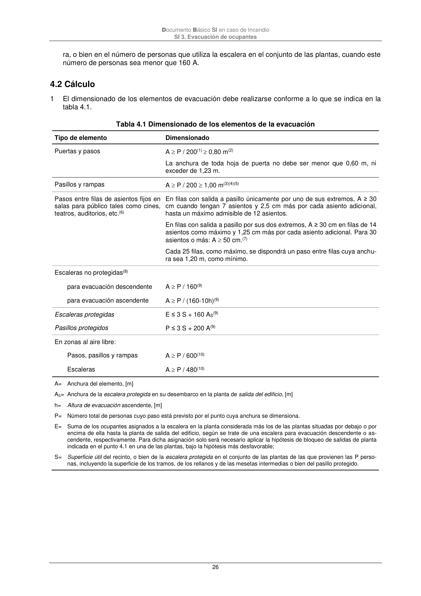

DB-SI Seguridad en caso de incendio · edición 2025-03-04 · capa oficial
Documento DB-SI-oficial · SHA-256 del PDF 0a2e78cd62471d9cc5cfe2efbc6aa39fdbad73c124aea7b039f9de96c141e105
Página física 26 de 92.
Copia fiel del PDF fuente · Fuente oficial
Ficha de la disposición en la fuente oficial
Formato: Texto de la página (Markdown)
Documento Básico SI en caso de Incendio SI 3. Evacuación de ocupantes 26 ra, o bien en el número de personas que utiliza la escalera en el conjunto de las plantas, cuando este número de personas sea menor que 160 A. 4.2 Cálculo 1 El dimensionado de los elementos de evacuación debe realizarse conforme a lo que se indica en la tabla 4.1. Tabla 4.1 Dimensionado de los elementos de la evacuación Tipo de elemento Dimensionado Puertas y pasos A P / 200(1) 0,80 m(2) La anchura de toda hoja de puerta no debe ser menor que 0,60 m, ni exceder de 1,23 m. Pasillos y rampas A P / 200 1,00 m(3)(4)(5) Pasos entre filas de asientos fijos en salas para público tales como cines, teatros, auditorios, etc.(6) En filas con salida a pasillo únicamente por uno de sus extremos, A ≥ 30 cm cuando tengan 7 asientos y 2,5 cm más por cada asiento adicional, hasta un máximo admisible de 12 asientos. En filas con salida a pasillo por sus dos extremos, A ≥ 30 cm en filas de 14 asientos como máximo y 1,25 cm más por cada asiento adicional. Para 30 asientos o más: A 50 cm.(7) Cada 25 filas, como máximo, se dispondrá un paso entre filas cuya anchu- ra sea 1,20 m, como mínimo. Escaleras no protegidas(8) para evacuación descendente A P / 160(9) para evacuación ascendente A P / (160-10h)(9) Escaleras protegidas E ≤ 3 S + 160 AS(9) Pasillos protegidos P ≤ 3 S + 200 A(9) En zonas al aire libre: Pasos, pasillos y rampas A P / 600(10) Escaleras A P / 480(10) A= Anchura del elemento, [m] AS= Anchura de la escalera protegida en su desembarco en la planta de salida del edificio, [m] h= Altura de evacuación ascendente, [m] P= Número total de personas cuyo paso está previsto por el punto cuya anchura se dimensiona. E= Suma de los ocupantes asignados a la escalera en la planta considerada más los de las plantas situadas por debajo o por encima de ella hasta la planta de salida del edificio, según se trate de una escalera para evacuación descendente o as- cendente, respectivamente. Para dicha asignación solo será necesario aplicar la hipótesis de bloqueo de salidas de planta indicada en el punto 4.1 en una de las plantas, bajo la hipótesis más desfavorable; S= Superficie útil del recinto, o bien de la escalera protegida en el conjunto de las plantas de las que provienen las P perso- nas, incluyendo la superficie de los tramos, de los rellanos y de las mesetas intermedias o bien del pasillo protegido.
